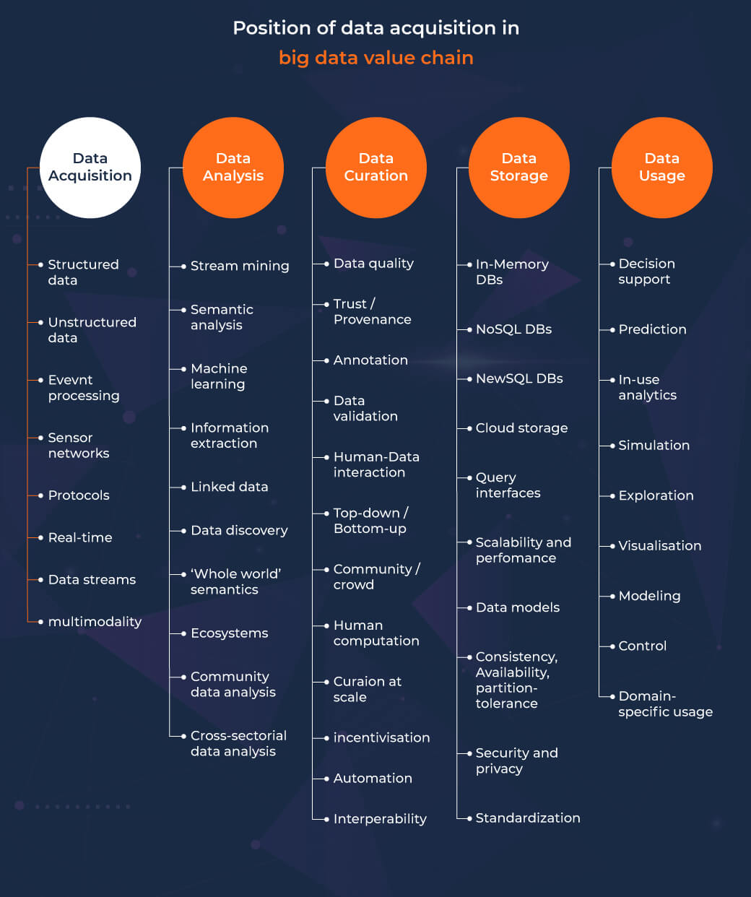
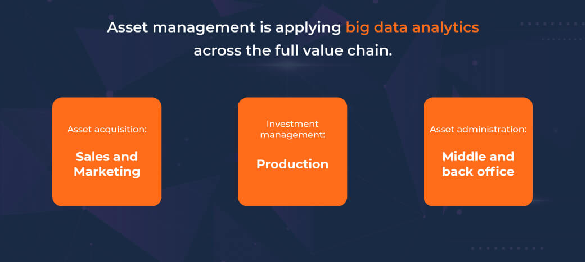
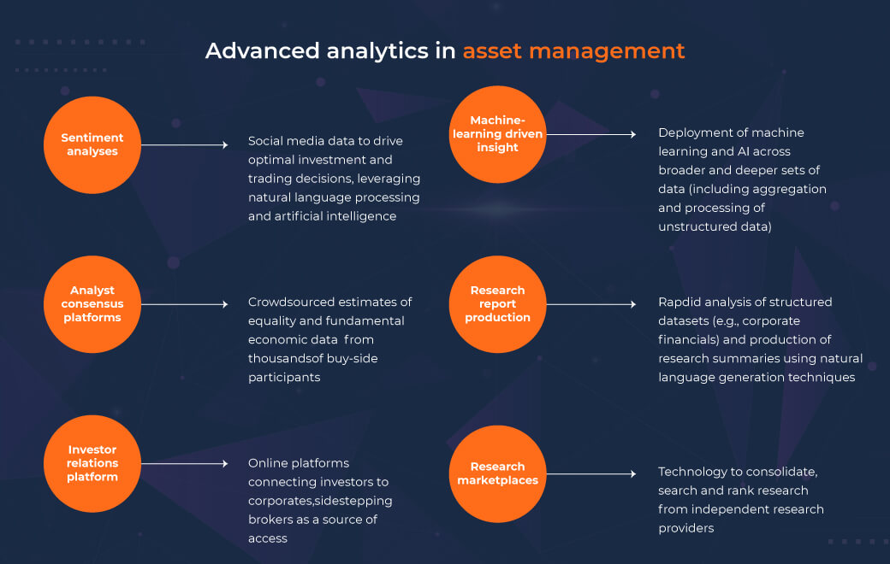

Introduction
Now things are changing. Compared to previous years, the application of advanced analytics began to provide solutions to specific business problems, especially big data in asset management. Many organizations are adopting new analytics methods at multiple points throughout the asset management value chain.
Big data is central to the reconstructing tasks that asset management is undertaking under the influence of emerging technologies. Big data in asset management embrace value-based pricing models; detects and prevents fraud; reduces customer attrition rates; Thus, improving customer satisfaction.
Based on the traditional asset management system, it has several flaws. Customer satisfaction and attracting them are factors affecting the growth of any business. Here we point out some of the downsides of traditional asset management.
Classify and monitor customer behavior to predict risks, Offer that are not personalized and do not meet the needs of different customer segments, and Inability to handle and analyze large volumes of unstructured customer data. These are some of the holes we can see in the traditional asset management system.
To overcome this uphill battle, implement data analytics in asset management to get profound insights into better investment decisions. Without further ado, let's get straight to our point.
Big data analytics enhance data acquisition
There are mainly four steps in big data analysis, they are data acquisition, data storage, data analysis, and data mining. The data acquisition can be further divided into two one is acquisition and the other is preprocessing.

Across the different architectures of big data processing, the core of data acquisition aims to collect data from distributed information sources. To get all these things in the right way we need three key elements:
- Protocols capable of collecting information from any type of distributed data source.
- Build data frameworks collected from distributed sources using different protocols.
- Follow technologies that allow persistent storage of data retrieved by frameworks.
To make better investment decisions, asset management companies need large amounts of data, which is made possible by technologies such as IoT and the Internet.
Making sense of this large collection of data and improving investment decisions is a complex process using legacy analytics methods.
With big data analytics, however, asset management companies can assimilate data and use the insights gained about market trends to make informed investments.
How does Big Data change the asset management industry?
Most asset managers make investment decisions based solely on stock price fluctuations and their clients' prospects, and these decisions are not always very accurate. The help of abundant data is essential to know what are the trends and make decisions according to the market trends.
By leveraging the benefits of big data analytics and artificial intelligence, asset management companies can gain valuable insights by analyzing unstructured and structured data. These improve investment decision insights.
Combined with techniques like machine learning and AI
big data can sort out useful information about investment market
trends and generate summaries and actions that asset management
companies can take when making investment decisions.
The following are the ways that asset management companies apply big data analytics across the full value chain.

Asset acquisition: Sales and Marketing Field
- Predictive algorithms are used to improve sales productivity
- It follows data-driven client prospecting and retention
- Advanced analytics helps to create personalized digital marketing
- Big data analytics performs behavioral segmentation of clients.
Investment Management: Production Field
- Improved trade execution algorithms
- Advanced and self-executed big data input for research.
- Alternative data can create new sources of alpha
- It helps to avoid/remove negative investment decisions.
Asset Administration: Middle & Back office
- Automated trade surveillance
- Increased process automation
- Decreased data management costs
- Increased administrative efficiency
Big data takes client profiling to the next level effectively
Client profiling is one of the core organizational processes of an asset management company. What asset managers expect to gain from this client profiling is a complete picture of their clients which means their client's requirements, expectations, and preferences. It is a detailed study of their clients which helps to increase company investment profit in many ways.
One of the best reasons why asset managers use data analytics to make client profiling so accurate and efficient is that they use data from different client segments to identify and differentiate them, making the client profiling process easier.
As far as an asset management company is concerned, the best they can do for their clients is to suggest better investment decisions. Client profiling handles such tasks very well.
Data analytics increases risk management capabilities effectively
From the name itself, it is a crucial part of asset management and is difficult to understand. Failure to find investment risks and implement strategies to mitigate them can have major financial consequences for the company and its client.
A common approach to assessing investment risk is to identify standard deviations in stock prices using legacy tools such as spreadsheets. However, this approach is not very accurate in understanding risks because it does not take into account all market variables. Risk can be adequately mitigated only through a proper data analysis process.
Here cums the role of big data and AI. With advanced data analytics tools, asset managers can develop stress models that can be used to check for stock market performance and company operations.
With the help of these scenario-based analytics, asset managers can optimize their risk management processes and make stress-free decisions.
With these advanced tools and technologies implemented asset managers can see a 50% to 80% reduction in trade assurance activities in time and improve risk management. Asset managers have found their machine learning algorithm was very good at detecting risks, more than having an experienced expert review.
You can improve your asset management investment decision with big data
Asset management companies can strengthen their presence and serve their clients by making better and more effective investment decisions with the help of big data analytics.
By implementing big data analytics and AI, asset managers can better understand their client requirements and how market trends impact their investment decisions, helping them optimize their investments to meet client requirements.
Big data analytics can provide a far broader source of data for an investment decision that is far more meaningful than what portfolio managers find using traditional data sources.
Very large data sets can be processed quickly with algorithms, which means more data can be analyzed faster and decisions can be made in seconds. The whole process is cheap and easy to do. But there is no compromise on securities and opportunities.
The given picture is about how asset management can implement modern data analytics and tools to make better investment decisions.

Wrapping Up
Big data technologies will continue to shape the future of asset management by enabling users and companies to make timely, cost-effective, and reliable investment decisions.
Asset managers can better understand their client requirements and how market trends affect their investment decisions, helping them optimize their investments to meet client requirements.
Do you work in asset management? Enjoy the effectiveness of better investment decisions by implementing Big data and AI in your business.
CO-Founder
Yokesh Sankar, Co-Founder and Chief Operating Officer of Sparkout Tech Solutions, leverages his expertise to drive innovation and operational excellence in the software industry. Passionate about empowering individuals with essential skills, he uses technology to streamline business processes and enhance efficiency. He advocates for AI and blockchain adoption, helping businesses integrate these technologies seamlessly into their operations. Staying ahead of AI trends, Yokesh explores industry applications and shares insights to foster growth and knowledge in the tech sector.